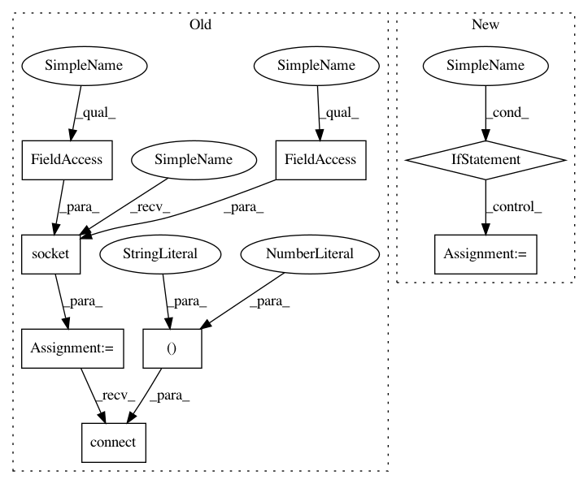

01bf5dd323bebd66b7ad60fdaee34eb8f7b76aae,lib/streamlit/proxy/Proxy.py,,_print_remote_url,#Any#Any#,50
Before Change
except (httpclient.HTTPError, RuntimeError) as e:
// Basically if not on EC2 do a hack and try to connect to
// internet and see what the local ip is.
s = socket.socket(socket.AF_INET, socket.SOCK_DGRAM)
s.connect(("8.8.8.8", 53))
ips.append(s.getsockname()[0])
s.close()
finally:
if http_client is not None:
After Change
def _print_remote_url(port, quoted_name):
external_ip = config.get_option("proxy.externalIP")
if external_ip:
LOGGER.debug(f"proxy.externalIP set to {external_ip}")
else:
print("proxy.externalIP not set, attempting autodetect of external IP")
http_client = None
try:
http_client = httpclient.HTTPClient()
response = http_client.fetch(AWS_CHECK_IP, request_timeout=1)
external_ip = response.body.strip()
except (httpclient.HTTPError, RuntimeError) as e:
LOGGER.error(f"Error connecting to {AWS_CHECK_IP}: {e}")
finally:
if http_client is not None:
http_client.close()
if external_ip is None:
print("Did not auto detect external ip. Please go to "
f"{REMOTE_DOC} for debugging hints.")
return
In pattern: SUPERPATTERN
Frequency: 4
Non-data size: 8
Instances
Project Name: streamlit/streamlit
Commit Name: 01bf5dd323bebd66b7ad60fdaee34eb8f7b76aae
Time: 2018-08-09
Author: armando@playground.global
File Name: lib/streamlit/proxy/Proxy.py
Class Name:
Method Name: _print_remote_url
Project Name: NervanaSystems/nlp-architect
Commit Name: 24d3656c6c4b3c6806954487720d53af775a1150
Time: 2018-06-07
Author: shira.guskin@intel.com
File Name: set_expansion_demo/ui/main.py
Class Name:
Method Name: get_phrases
Project Name: NervanaSystems/nlp-architect
Commit Name: 24d3656c6c4b3c6806954487720d53af775a1150
Time: 2018-06-07
Author: shira.guskin@intel.com
File Name: set_expansion_demo/ui/main.py
Class Name:
Method Name: get_expand_results_callback
Project Name: streamlit/streamlit
Commit Name: 883644354ca6c016a9b79d67e0494db88a823c23
Time: 2018-08-14
Author: armando@playground.global
File Name: lib/streamlit/proxy/Proxy.py
Class Name:
Method Name: _print_remote_url
Project Name: streamlit/streamlit
Commit Name: 01bf5dd323bebd66b7ad60fdaee34eb8f7b76aae
Time: 2018-08-09
Author: armando@playground.global
File Name: lib/streamlit/proxy/Proxy.py
Class Name:
Method Name: _print_remote_url